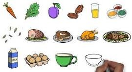

conhecendo os alimentos: do natural aos industrializados
Os alimentos processados são aqueles que passaram por algum tipo de modificação industrial para aumentar sua durabilidade ou melhorar o sabor.
Nesse processo, são adicionados ingredientes como sal, açúcar, óleo ou conservantes, mas o alimento original ainda continua sendo a base do produto.
Nos alimentos processados, alguns ingredientes são adicionados para conservar o alimento, melhorar o sabor ou aumentar o tempo de duração. Os principais são:
• Sal • Açúcar • Óleo ou gordura • Conservantes • Corantes • Aromatizantes • Vinagre 1. Queijo 2. Pão francês 3. Milho enlatado 4. Atum em lata 5. Molho de tomate prontoA diferença entre alimentos in natura e processados está no nível de modificação que eles sofrem antes de chegar ao consumidor.
Os alimentos in natura são obtidos diretamente da natureza e não passam por processos industriais, mantendo suas características naturais. Exemplos: frutas, verduras, ovos e leite fresco.

